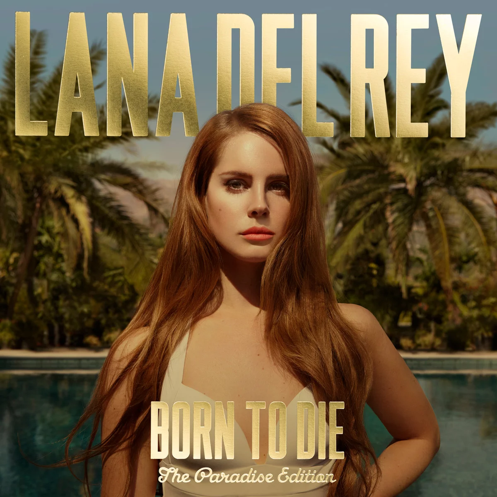
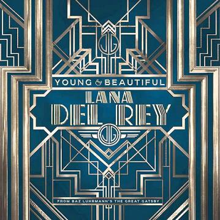
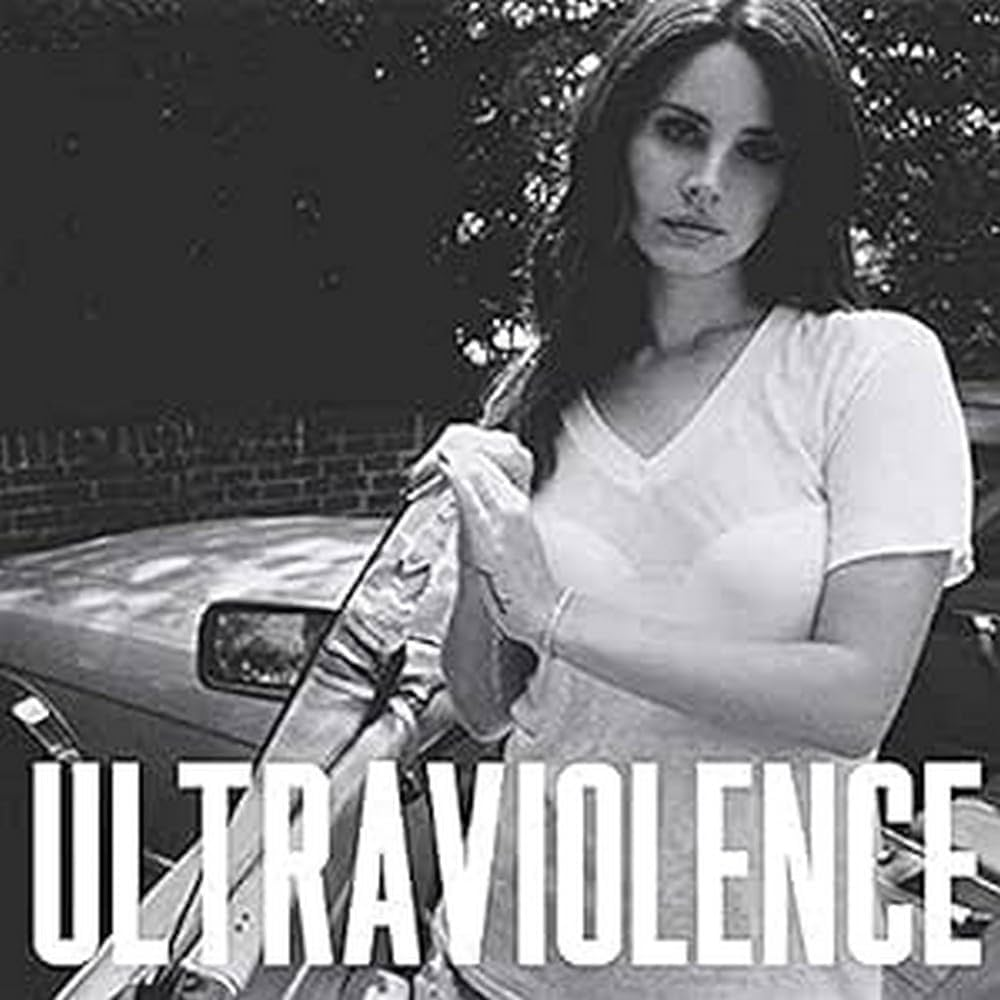

Elizabeth Woolridge Grant, conhecida mundialmente como Lana Del Rey, nasceu no dia 21 de junho de 1985, em Nova York. Os primeiros nomes artísticos da cantora foram Sparkle Jump Rope Queen e Lizzy Grant and the Phenomena.
Desde jovem, Lana descobriu o gosto pela música, mas acabou passando mais tempo escrevendo do que cantando. A adolescência da artista foi marcada por alguns problemas, como a dependência de álcool, que começou aos 14 anos de idade. Lana passou um tempo internada e, após se recuperar, decidiu estudar metafísica.
Já a carreira musical teve início aos 17 anos, quando a artista divulgou seus vídeos no YouTube. O sucesso internacional veio com a canção "Video Games" que foi lançada na internet em julho de 2011 e fez parte do álbum Born to Die, finalizado no ano seguinte.
Em 3 de Abril de 2013, Lana Del Rey lançou sua primeira música para uma trilha sonora de filme. "Young and Beautiful" fez parte do longa “O grande Gatsby”, estrelado por Leonardo DiCaprio. Nos dias de hoje, com suas músicas melancólicas, a cantora têm ganhado cada vez mais popularidade entre os jovens.
Com nove álbuns de estúdio lançados, a cantora é uma das maiores artistas da atualidade, com músicas que conquistam o coração de qualquer um.Clique aqui para acessar toda a discografia disponível no spotify da cantora
| Posição | Álbum | Música | >Qntd. de streams | |
|---|---|---|---|---|
| 1 |  | Born to Die | Summertime Sadness | 1.343.750.795 |
| 2 | ---------- | Say Yes To Heaven | 432.692.658 | |
| 3 |  | ---------- | Young and Beautiful | 1.181.696.567 |
| 4 |  | Ultraviolence | West Coast | 657.937.004 |
| 5 | Born to Die | Radio | 533.899.045 | |
E foi isso, espero que tenha gostado! Lembrando que os dados apresentados são do dia 06/04/2024. Até a proxima!